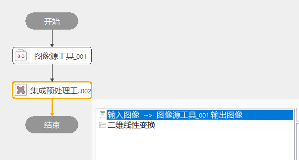
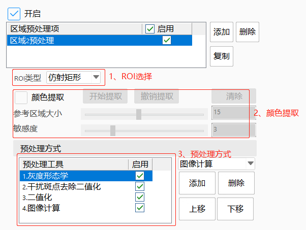
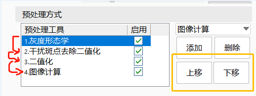
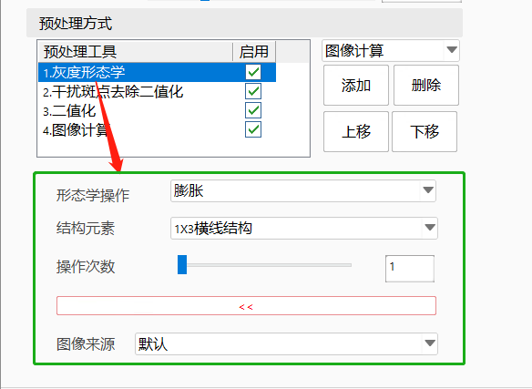
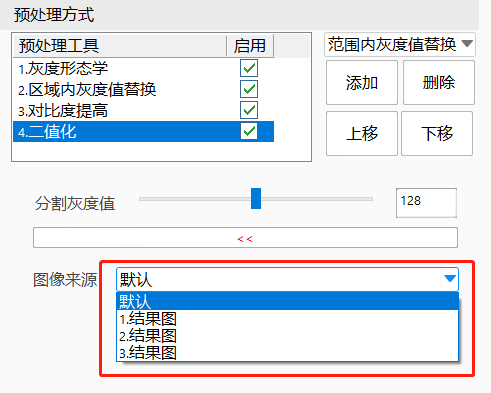
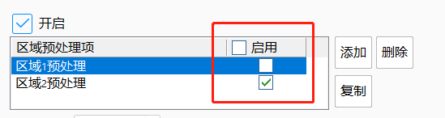
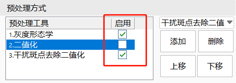
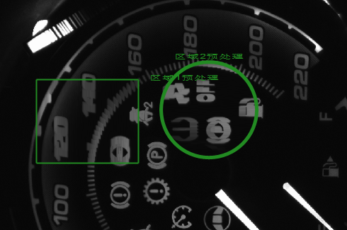

集成预处理工具为一个集成类工具，集成了当前项目中常见的预处理方式，包括彩色颜色提取、RGB图像分离、灰度形态学、区域内灰度值替换、对比度提高、二值化、范围内灰度值替换、图像与图像计算、图像计算、干扰斑点去除二值化等。
集成预处理工具旨在允许用户使用一个工具完成大多数预处理功能，而不再需要在流程图中添加很多个单独的预处理工具。并且工具设计成实时处理的方式，允许用户在完成功能添加后，实时查看预处理的结果图像，提高用户的使用体验和操作效率。
其典型的应用场景是允许用户灵活的搭建一个标准的项目应用流程，在图像采集流程后面添加一个空的集成预处理工具，最终的使用者可以根据项目的实际预处理需求选择是否开启预处理功能，并添加所需的预处理功能。
集成预处理工具本质上是集成了VA中的多种预处理工具，如颜色提取功能，内部调用了颜色提取工具，二值化内部调用了二值化工具，在此文档内不再介绍每一种预处理功能的操作原理，用户可以单独找到对应工具的说明文档进行查看。

添加区域预处理项，每个项最终都会有一个预处理结果区域图像的输出。项的内容包括：
1、ROI：当前项的预处理结果生效区域。支持矩形、仿射矩形、圆形、多边形。
2、颜色提取：针对当前ROI进行颜色提取。功能同颜色提取工具。
3、预处理方式集合：以颜色提取的结果（如果启用）作为输入图像，按照列表中的预处理工具的先后顺序依次执行。工具包括：彩色RGB图像分离、灰度形态学、区域内灰度值替换、对比度提高、二值化、范围内灰度值替换、图像与图像计算、图像计算、干扰斑点去除二值化。

“预处理方式执行逻辑"：上一个启用的预处理工具的执行结果作为下一个预处理工具的输入，最后一个启用的预处理工具的执行结果作为当前区域预处理的总结果，同时可以改变预处理工具的上下顺序，从而改变执行的先后顺序。

“预处理工具参数配置”
选中预处理方式列表中的预处理工具，下方会显示当前可调参数，如下图所示：

“图像来源"：默认为上一个启用的工具执行结果，可配置当前选中的预处理工具的图像输入，可选择项为前面预处理工具的结果图。如果当前工具为第一个，则输入图像为颜色提取结果图。

开启和关闭
可控制区域预处理项的执行或者不执行。

可控制预处理方式中的预处理工具的执行或者不执行。

实时执行结果显示
全局预处理结果图像实时更新。

| 现象描述 | 解决方法 |
|---|---|
| 预处理执行失败 | 区域预处理项为空、区域预处理项都未启用、预处理项中没有添加工具、如果是彩色图像，没有启用颜色提取或者没有添加彩色转黑白工具。 |
| 参数名称 | 参数说明 |
|---|---|
| 是否输入彩色图像 | 是：输入图像是彩色图；否：输入图像是灰度图 |
| 参数名称 | 参数说明 |
|---|---|
| 输入图像 | 可链接灰度输入图像 |
| 输入图像RGB | 可链接彩色输入图像 |
| 二维线性变换 | 链接二维线性变换 |
| 参数名称 | 参数说明 |
|---|---|
| 输入图像 | 在视图区域的Edit项显示用户通过参数链链接的灰度图像 |
| 输入图像RGB | 在视图区域的Edit项显示用户通过参数链链接的RGB图像 |
| 输出图像 | 在视图区域的Result项显示最终的预处理图像 |
| 工具执行结果 | 显示当前工具的整体执行状态 |
| 工具执行时间 | 显示当前工具的执行时间 |
参见“\Samples\集成预处理工具.gvp”。